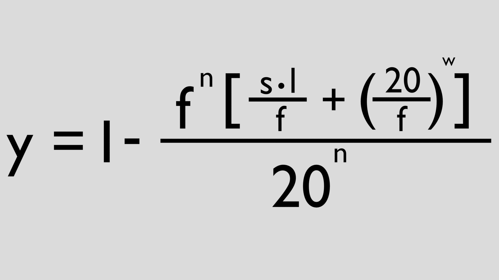

Nasa Space Apps 2025-2026
Exploration of exoplanets
What is an Exoplanet?
An exoplanet is a planet that orbits a star beyond our own solar system. These distant worlds can be rocky like Earth, gaseous like Jupiter, or a mix of both, and they come in a wide range of sizes and temperatures. Because their parent stars shine so brightly, astronomers rarely see exoplanets directly. Instead, they detect them by noticing slight dips in a star’s brightness when a planet crosses in front of it or by observing tiny wobbles in the star’s motion caused by the planet’s gravity. Thousands of exoplanets have been discovered using these methods, and scientists continue to search for those
located in the “habitable zone,” where conditions might allow liquid water and potentially support life.

What Statistics are used when identifying Exoplanets?
When identifying exoplanets using the transit method, astronomers rely on several key statistics to confirm a planet's presence and determine its properties. One of the most important is the transit depth, which measures how much a star’s brightness dims when a planet passes in front of it. This depth is used to calculate the radius of the planet relative to the star. A deeper transit indicates a larger planet, assuming the star’s size is known. To assess the reliability of a detection, scientists calculate the false positive probability (FPP), which estimates the likelihood that the signal is caused by something other than a planet, such as an eclipsing binary system or instrumental noise. A low FPP is necessary to confirm the candidate as a true exoplanet. The signal-to-noise ratio (SNR) is also important, as it shows how clearly the transit stands out from background noise. Regular patterns in brightness dips are analyzed to confirm periodicity, indicating a consistent orbital period. Once these factors are verified, methods like Markov Chain Monte Carlo (MCMC) are used to refine estimates of the planet’s radius, orbital inclination, and other parameters, while accounting for uncertainties. Together, these statistics help identify exoplanets with confidence and provide insight into their physical characteristics.
Transit Depth and FPP
Transit depth refers to the fractional decrease in a star’s brightness when a planet passes in front of it from our point of view. This dip in brightness is directly related to the size of the planet compared to the size of the star and is calculated using the ratio of their radii squared
. A deeper transit indicates a larger planet, while a shallower transit suggests a smaller one. On the other hand, FPP, or False Positive Probability, measures the likelihood that a detected transit signal is not caused by a planet, but by some other astrophysical or instrumental phenomenon, such as an eclipsing binary star system or a background star contaminating the signal. A low FPP value—typically less than 1%—is essential for confirming that a transit signal is truly due to an exoplanet and not a false alarm. Together, transit depth and FPP are crucial parameters in validating potential exoplanet candidates in transit surveys.
Planet Orbital Period
An exoplanet’s orbital period is the time it takes to make one full revolution around its star, similar to how Earth takes 365 days to orbit the Sun. This period can vary widely, from just a few hours for planets that orbit very close to their stars to thousands of years for those far away. Astronomers determine orbital periods by observing repeating signals, such as the dimming of a star when a planet passes in front of it (transit depth) or the wobbling of a star caused by the planet’s gravity (radial velocity method). According to Kepler’s Third Law, planets closer to their stars orbit faster
and have shorter orbital periods,
while planets farther away orbit more slowly and take longer to complete a year.
|
kepler_name |
koi_disposition |
koi_pdisposition |
koi_period |
koi_duration |
koi_depth |
| 10 |
Kepler-1 b |
CONFIRMED |
CANDIDATE |
2.470613 |
1.74319 |
14231.0 |
| 3105 |
Kepler-10 b |
CONFIRMED |
CANDIDATE |
0.837491 |
1.79600 |
190.4 |
| 3170 |
Kepler-10 c |
CONFIRMED |
CANDIDATE |
45.294223 |
6.83000 |
477.1 |
| 2360 |
Kepler-100 b |
CONFIRMED |
CANDIDATE |
6.887071 |
4.46790 |
68.7 |
| 2575 |
Kepler-100 c |
CONFIRMED |
CANDIDATE |
12.815904 |
6.38560 |
220.5 |
| 2486 |
Kepler-100 d |
CONFIRMED |
CANDIDATE |
35.333193 |
5.96600 |
99.7 |
| 1661 |
Kepler-1000 b |
CONFIRMED |
CANDIDATE |
120.018355 |
11.63700 |
886.0 |
| 1662 |
Kepler-1001 b |
CONFIRMED |
CANDIDATE |
14.305176 |
4.53500 |
863.4 |
| 1663 |
Kepler-1001 c |
CONFIRMED |
CANDIDATE |
9.181891 |
4.34300 |
363.6 |
| 1357 |
Kepler-1002 b |
CONFIRMED |
CANDIDATE |
4.336435 |
4.14450 |
108.5 |
| 1377 |
Kepler-1003 b |
CONFIRMED |
CANDIDATE |
3.554856 |
2.10040 |
232.9 |
| 1378 |
Kepler-1004 b |
CONFIRMED |
CANDIDATE |
5.287908 |
8.52740 |
343.9 |
| 1399 |
Kepler-1005 b |
CONFIRMED |
CANDIDATE |
6.498015 |
2.43840 |
190.9 |
| 1400 |
Kepler-1006 b |
CONFIRMED |
CANDIDATE |
19.761692 |
3.90970 |
392.5 |
| 1401 |
Kepler-1007 b |
CONFIRMED |
CANDIDATE |
5.184990 |
2.13970 |
430.1 |